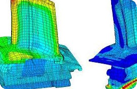
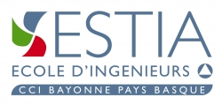
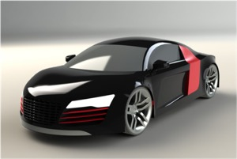

Cranfield University, School Of Engineering, Applied Mathematics and Computing Group (UK)
MSc Computational & Software Techniques in Engineering, option Computer Aided Engineering

This Master course in 'Computational and Software Techniques in Engineering, option Computer-Aided Engineering', with its blend of skills-based and subject-specific material equipped me with the generic hands-on skills and up-to-date knowledge adaptable to the wide variety of applications in the general field of computational engineering; e.g. Computational Mechanics, Geometric Modelling, Advanced Numerical Analysis, Computer-Aided Design, Systems Engineering and Innovative Product Design.
• Course Information Manual:
MSc Computational & Software Techniques in Engineering, option Computer-Aided Engineering course manual
» Overview
» Detailed version
• Assignements:
Pinquié, R. (2012). Practical Finite Element Analysis (FEA)
» Linear static FEA using ABAQUS CAE
» 83% - Standard = Excellent
Pinquié, R. (2012). Computer-Aided Design (CAD)
» 3D solid modelling using CATIA V5
» 81% - Standard = Excellent
Pinquié, R. (2012). Computational Engineering Design Optimisation (CEDO)
» Computaitonal optimisation of the amount of material used
to build a column
» 74% - Standard = Very Good
• Thesis:
Pinquié, R. (2012). Development of Prognostics and Health Management design technology, PHM Technology Pty Ltd, Melbourne, Australia
» Development of Prognostics and Health Management design technology
» 70% - Standard = Very Good
• Results:
Assessment results obtained during the MSc Computational & Software Techniques in Engineering, option Computer-Aided Engineering course manual
» Assessment results obtained during the Master Of Science program
» Certificate

'École Supérieure des Technologies Industrielles Avancées' (France)
Master's Degree in Computer-Aided Engineering
• Theses:
Pinquié, R. (2012). Development of Prognostics and Health Management design technology, PHM Technology Pty Ltd, Melbourne, Australia
» Development of Prognostics and Health Management design technology
» Development of Prognostics and Health Management design technology (Slides)
» Overall average: 19.2/20 - Best ESTIA engineering school end-of-course internship
Pinquié, R. (2011). 3D CAD of test benches using CATIA V5 and mechanical tests of aircraft equipments, Hamilton Sundstrand's Ratier-Figeac unit, Figeac, France
» 3D CAD solid modelling of test benches using CATIA V5 and mechanical tests of aircraft equipments
» Letter of reference
Pinquié, R. (2010). Development of MS Excel spreadsheet to ease and speed up automated stress calculations of wood structures, E.C.T.A, Pau, France
» Development of MS Excel spreadsheet to ease and speed up automated stress calculations of wood structures
» Overall average: 16.0/20
• Certificate:
» Certificate